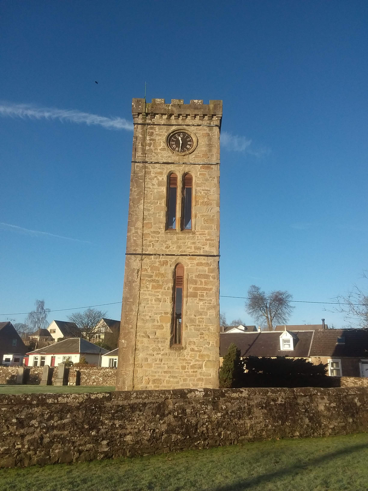
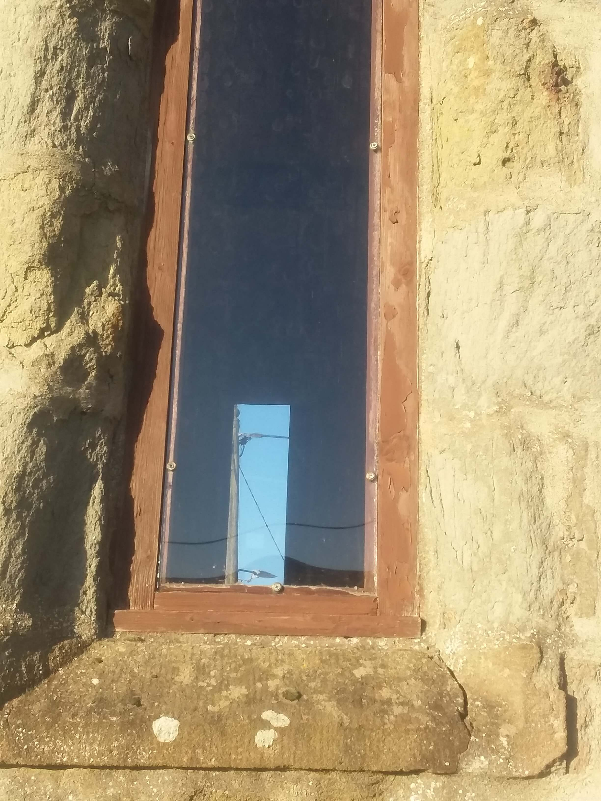

Clock Tower Improvements
The clock tower has had wooden boards in the windows for many years. These were in a bad condition and required to be replaced, there was also a fear that bats or birds might roost in the tower. A volunteer requires to climb the stairs and wind the clock once a week. The clock tower with the wooden boards made the inside of the tower very dark and it was a health and safety issue. The boards have therefore been replaced with clear perspex. The tower is now much lighter inside and looks very much better from the outside and should be secure for nany years.

It's 11.30 and sunny in Braco !!

That's handy ! You can see through the windaes !